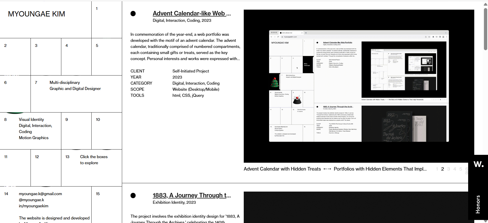
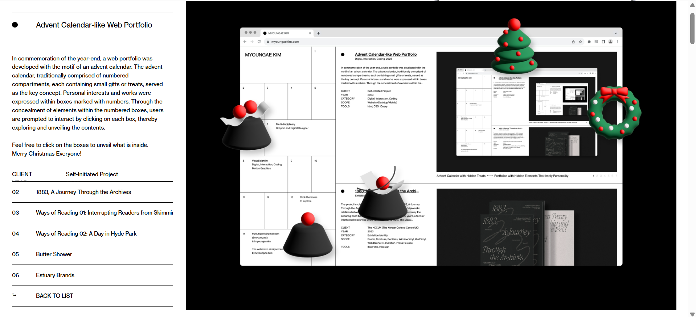
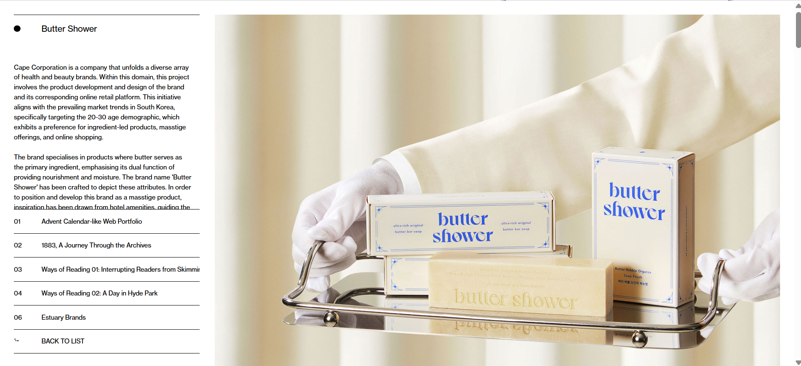
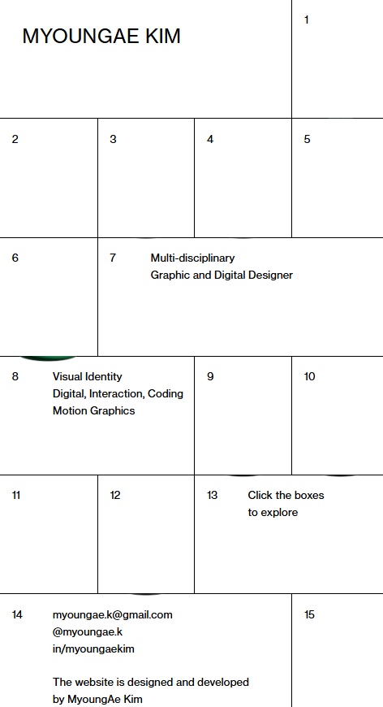
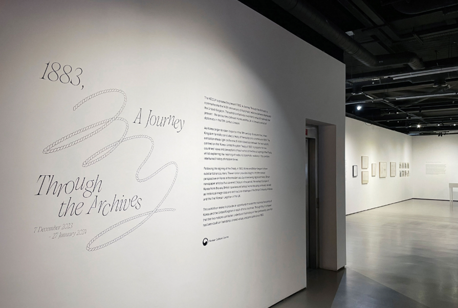
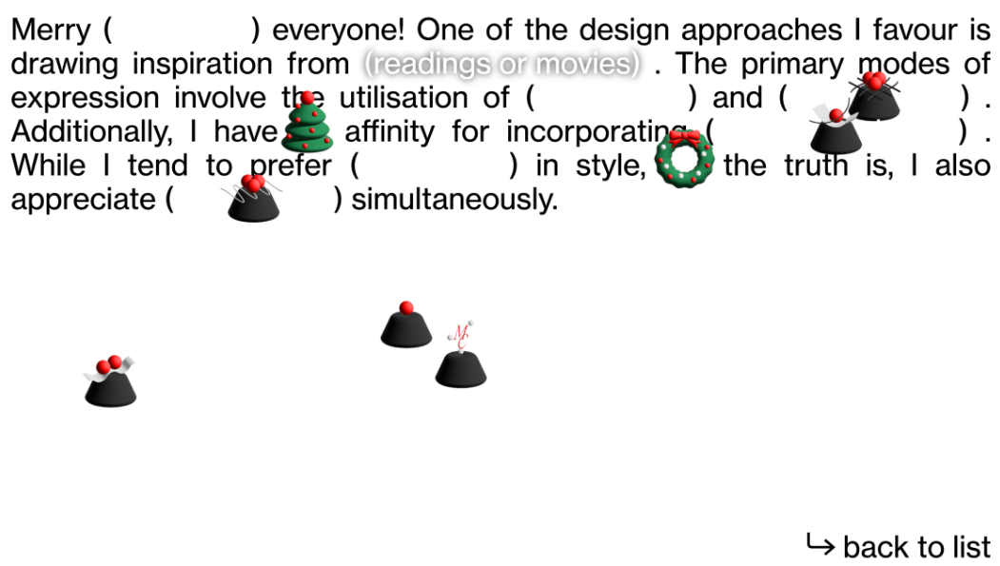
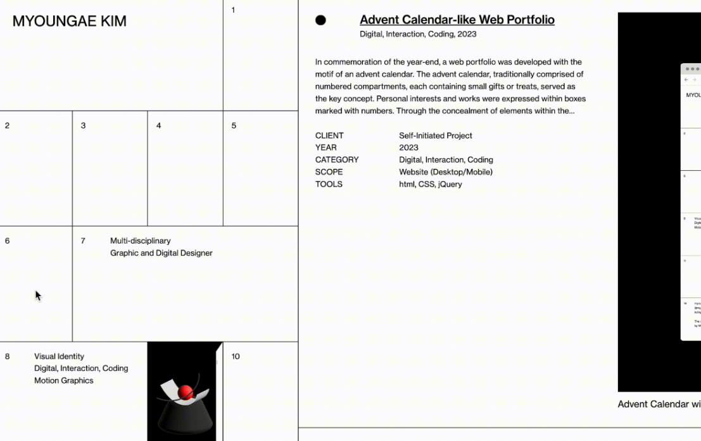
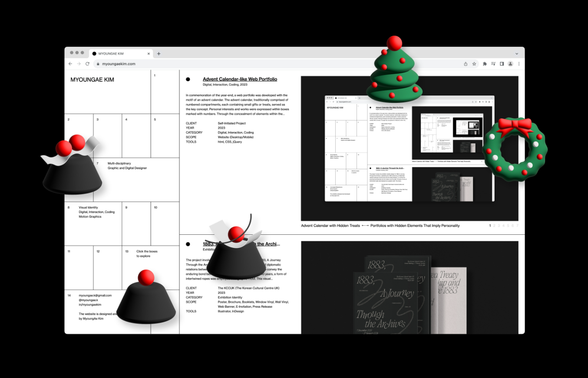
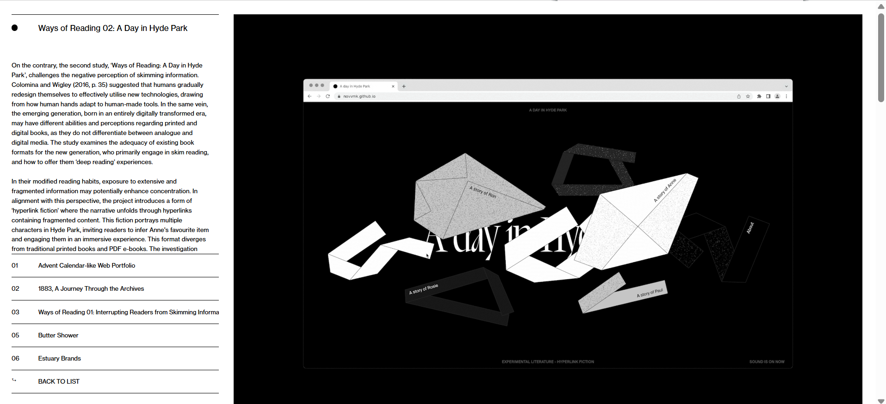

Interactive Experience Research Project
1.
What was the first thing you paid attention to when interacting with
the experience?
I first noticed the interactive advent calendar on the left side. Its minimalist style makes it prominent, despite having lacking in details. In addition, the interactive aspect of the calendar further highlights my attention to it. 
2.
Spend two minutes with the experience and create a list of each of your discrete actions.
- Scrolled through the website and read about all their past works
- Looked at the picturesthey displayed, and navigated them through clicking the numbers on the bottom right of the images
- Clicked on the titles of their work which lead me to another page that provided more information on their works
- I began interacting with the calendar, by clicking on each box
3.
What part of the experience did you spend the most time engaging with?
For the majority of the experience I spent most of my time engaging with the calendar. It offers an interesting and fun experience as you look through their website, as well as giving the user a sample of Kim's work and capabilities. 
4.
What was the most common action in your two minute interaction with the experience?
The most common action I was doing throughout this interaction was scrolling as this website is information heavy regarding their work and experience. 
5.
What is your impression of the intended primary goal of the interactive experience?
My impression of the purpose of this website is to mainly showcase Kim's works and experience, a portfolio to show employers, hence why their contact information is also featured at the bottom left of the calendar. 
6.
How does the interactive experience communicate this primary goal?
The website almost acts like a gallery due to the minimalism and lack of colour, which leads users to focus on their works listed on the right. The list primarily requires the user to scroll through and read its information while looking through the images of the work's examples. 
7.
What is your impression of how the experience should be interacted with over time? (For how long and how many different times)
The experience should be interacted with a lot of attention, I feel that it is very easy to miss things with a lack of focus. For example, the interactivity of the calendar can be easily missed if the user is not paying atention to the information diaplayed to us. 
8.
How does the interactive experience communicate how it should be interacted with over time?
The interactive experience communicates that the user should take their time when going through the website. Scrolling through Kim's works requires the user to read about the details, furthermore, reading routes the user to additional information and their other works.
9.
What other media forms (digital or otherwise) does the experience reference?
The website references an advent calendar which has been intergrated with this website. 
10.
What does this reference/s communicate to you about how you should act when engaging with your research experience?
The advent calendar conveys that the smallest or largest of details can make engaging experiences for the users to interact with, that I should be patient and prioritise every feature it offers. 
11.
What does this reference/s communicate to you about how you should feel when engaging with your research experience?
This reference tackles the idea that a website does not need to be flashy or colourful to gain and retain the user's attention as long as the concept or idea of a design is effectively depicted within its interactivity. 
12.
What is the most frustrating part of the interaction to you and what makes that part frustrating?
My primary qualm with the interaction is the layout of their past works. The scrolling list of their works is too compressed which made the experience which made the experience difficult in the sense of having to read through the information.
13.
What is the most satisfying part of the interaction to you and what makes that part satisfying?
I found the advent calendar very pleasing, when a box is clicked to open we are able to move the objects it contained around the screen, which provided some colour to the website. In addition, it created a scenario of decorating your place during the holiday season. Furthermore, the animations of the box opening and the objects shaking gave a sense of excitement as opening a present.